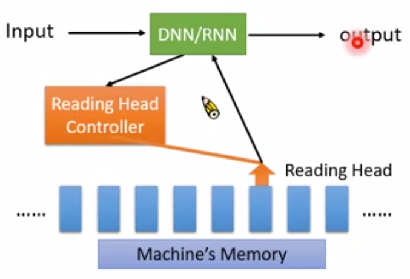
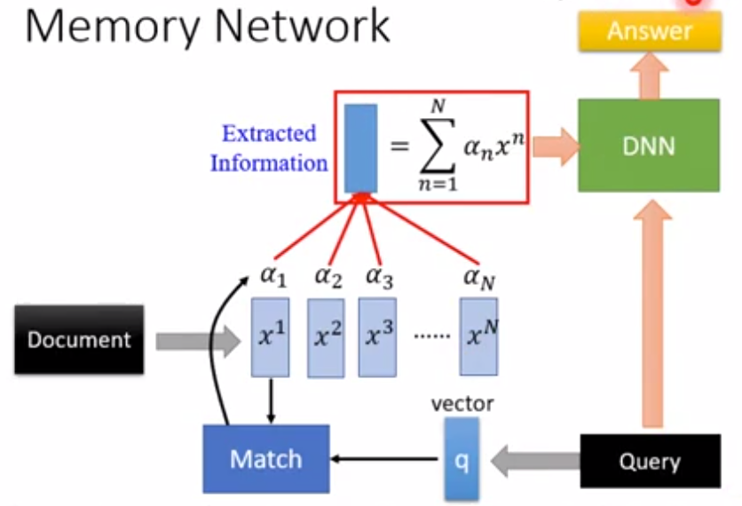
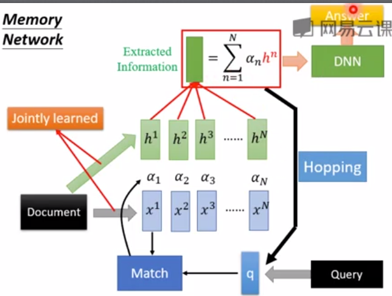
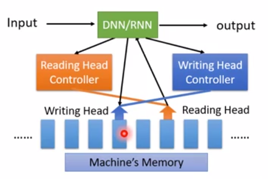
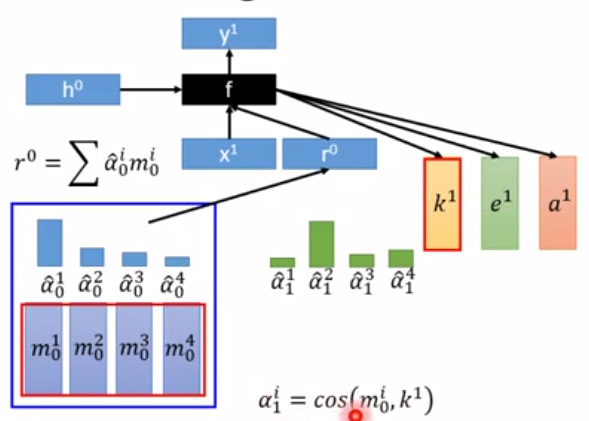
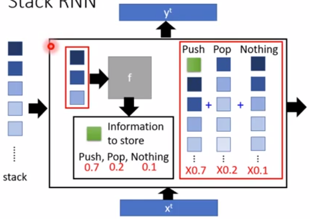
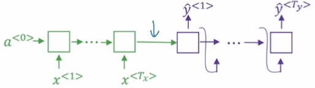
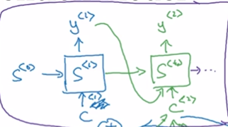
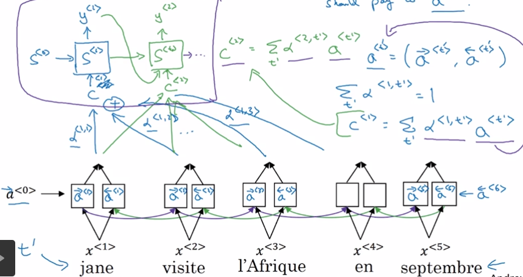
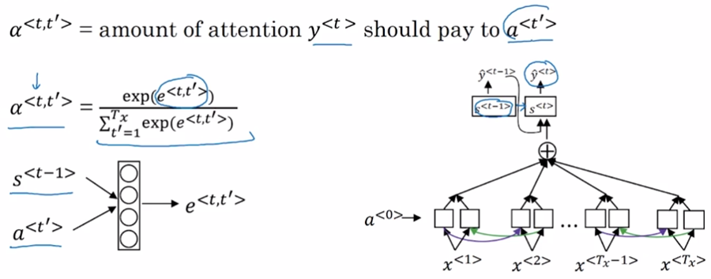

From 李宏毅
1. Attention-based Model基础版（只读模型）

1.1. 应用
- seq2seq
- 阅读理解 squad比赛
1.2. 基于Attention-based技术的Memory Network

- 把Document中的每个句子转成向量，N个句子得到N个高维向量
- 降维，N个高维向量降到N个低维向量x
- 将Query转成向量q
- 计算q与x的match score，每个x对应一个score，定义为
- 根据对x做加权求和
- 5的结果和q一起进入一个DNN
- 由DNN产生answer
2. Attention-based Model进阶版
Sentence to vector can be jointly trained.

2.1. 改进1
Document产生2个向量，分别是x和h。
第4步使用x计算match score，用于决定从哪些向量抽取信息。
第5步使用h生成最终被抽取的信息。
2.2. 改进2 hopping
根据当前的结果生成新的问题向量q
基于新的q再计算答案
hopping可以做多次，hopping的次数可以是人为决定，也可以Machine自己决定ReasoNet。
2.3. 应用
视觉问答
- 模型读入一张图
- 通过CNN，将每个小区域转成一个向量
- 输入一个问题，由reading head controller决定，哪个区域与问题相关
- 读入相关的区域，产生output
文本QA
- 通过Semantic分析，将每个句子转成一个向量
- 输入一个问题，由reading head controller决定，哪个句子与问题相关
- 把相关的句子读进模型，产生output
语音QA
- 例如托福听力测试
- 将语音识别、句义分析、attention的综合运用
3. Attention-based Model升级版（可读可写）

3.1. Turing简化版

k: attention weight
e: 要清空的东西，attention越多的地方，清得越多
m：原来database里面的值
a：要放入的新的信息
3.2. Truing完整版
又叫Neural Turing Machine
太复杂了，不想看
3.3. Stack RNN

- 假设memory中的值都以stack的形式存储
- 读入stack的前几个值（相当于默认attention在前几个值上）
- f输出三个值a1, a2, a3
另对原信息定义以下三个操作，每个操作分别基于原始信息做改变，分别得到向量v1, v2, v3 - Push：把Information放入Stack
- Pop：把stack顶值丢掉
- Nothing：不变 v = v1 a1 + v2 a2 + v3 * a3
From Ag
翻译模型的特点：

先输入整个原文序列，再输出整个翻译序列。
事实上，如果原文序列很长，一次性记住全部内容是困难的。
改进方法：attention based模型，一次翻译一部分。
4. encoder
使用双向RNN来计算每个单词的特征。双向RNN的unit可以是GRU或LSTM或其它类型的Unit。
每个单词通过双向RNN会得到2个activition，分别定义为\overrightarrow{a^t}和\overleftarrow{a^t}。并用一个符号来表现这两个activation。
a^t = (\overrightarrow{a^t}, \overleftarrow{a^t})

5. decoder
decoder部分的结构和翻译模型是基本上一样的。

decoder使用某个context作为输入，context用向量C表示，是一个与encoder中的activation有关的向量。
6. 注意力权重
关键在于怎样连接encoder与decoder。翻译模型使用顺序连接，先encoder，再decoder。
注意力模型使用注意力权重将encoder的activation和decoder的context联系到一起。

定义注意力权重为：当生成y的第t1个单词时，对原文第t2个词的注意力应该是多少？
注意和的区别。
计算的公式为：
后面没听懂，帖个图在这里。

7. 时间复杂度
注意力模型的时间复杂度为，复杂度有点高。
由于机器翻译的输入、输出通常不是会太，因此也是可以接受的。